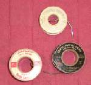
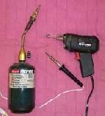
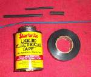
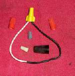
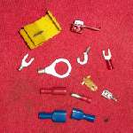

¶ Sooner or later you are going to have to join two wires together. You want to add some lights or a wire gets damaged. Lots of reasons to do it. The big question is exactly how do we do it. There are actually only two ways to do it. The right way, soldering the wires, or the almost right way, which includes all the other ways. Clear as mud, right? Ok, this is what I mean. The best way, the way all the factories use, is to solder the wires together. This makes a strong, electrically sound connection. However, there are other ways that, in my experience, work almost as good. Let's start with the best method, Soldering.
Before you start you MUST have eye protection. Any moisture in a wire will EXPLODE into steam and send the hot, molten, solder into your face. Trust me... it will hurt.
WEAR EYE and FACE PROTECTION.
If you don't, that's OK, I don't care... It's not my eyes or face!

Let's start with the basics. The drill is this.
- Strip the wire of all insulation back as far (usually about 3/4"-1") as you need from the end to be soldered. Do this to both wires to be soldered.
- If you are going to use heat shrink tubing for insulation, put a length of it on the wire now.
- Twist the wires together.
- Apply some flux to twisted ends of wire.
- Apply heat to the twisted tire with some kind of heat source, like a soldering iron or gun.
- Touch the twisted wire with the solder as you heat it up. The solder will melt and flow into and between the twisted wire. When the solder looks good (nice and smooth, not balled up or with gaps in it), your done!

 Sounds so easy doesn't it? But not always! Sometimes it works and sometimes it doesn't. On these times, the solder just will not stick. It won't "Flow". It balls up and looks bad. What to do now? If the wire is very badly corroded, take a knife or some sand paper and work over that wire. Scrape and/or sand all the corrosion off the wire. Now reflux the wire and try to solder it again. You will now find your success rate will now go up quite a bit, but every once in a while the solder just will not bond to the wire. When you run into the real nasties, there is only one cure... Acid. It's usually called "Tinners Fluid" and it contains Hydrochloric Acid and Zinc Chloride. Make sure you have your safety glasses on and remember it's acid and will burn you. With acid I'd say your success rate will be real close to 100%. If it looks real nice, with smooth flowing lines, you are good to go.
Sounds so easy doesn't it? But not always! Sometimes it works and sometimes it doesn't. On these times, the solder just will not stick. It won't "Flow". It balls up and looks bad. What to do now? If the wire is very badly corroded, take a knife or some sand paper and work over that wire. Scrape and/or sand all the corrosion off the wire. Now reflux the wire and try to solder it again. You will now find your success rate will now go up quite a bit, but every once in a while the solder just will not bond to the wire. When you run into the real nasties, there is only one cure... Acid. It's usually called "Tinners Fluid" and it contains Hydrochloric Acid and Zinc Chloride. Make sure you have your safety glasses on and remember it's acid and will burn you. With acid I'd say your success rate will be real close to 100%. If it looks real nice, with smooth flowing lines, you are good to go.
If you have a new tip on your soldering gun, or the old one has a dirty tip you will need to tin and/or clean it. I do this by heating up the tip, dip it in the flux (It will smoke!) and then putting a bit of new solder on it. I also like to keep a small jar of water near and dip the hot tip in it every once in a while. This pops the slag off the end of the tip. Some guys use a wet sponge. If you get too much solder on your project or want to get the old solder off, you can use a solder sucker. This is just a squeeze bulb that quickly sucks the excess solder away. Just keep the solder molten and suck away!
You can see how smooth and flowing the solder is between the wire... kinda, sorta anyway.
 10 X A Good Solder Job. |
 60 X A Good Solder Job. |
Redo with some Tinners Fluid.
 10 X A Bad Solder Job. |
 60 X A Bad Solder Job. |
If you are really into pretty, check out what is known as a Western Union/Lineman Splice.





Last and certainly least, is a way I DO NOT recommend. DO NOT do it this way. I hate to admit this, but yes, I have done an evil thing. Once, many years ago, I was touring on my BMW. One of the wires going to my turn signal, on my fairing, pulled loose. So I just got in there and kind of twisted the two wires together, then positioned them so they couldn't ground out. (the fairing was fiber glass, so that was easy.) I was a million miles from nowhere and I had no electricians tape. So things weren't even taped. I really meant to fix it right, at the very next town, but, well, I sorta forgot. Every once in a while over the next two, three years and 20-30,000 miles I'd remember and say to myself, "you better fix that and soon." It was just other bikes had to get fixed first and, well, you know. However, it did work till the day I finally got in there and did it right. How's that saying go? Do as I say, not as I do.
"O wretched man that I am! who shall deliver me from the body of this death? I thank God through Jesus Christ our Lord... "
Romans 7:19,24,25
If you want to know how the US Space Agency NASA solders, here is their PDF (114 pages) on it.

 |
 |
Copyright © 1999-2013 dansmc.com. All rights reserved.